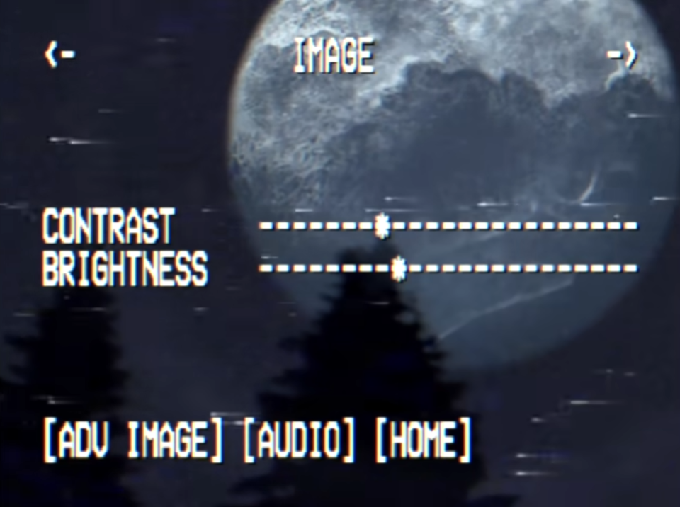
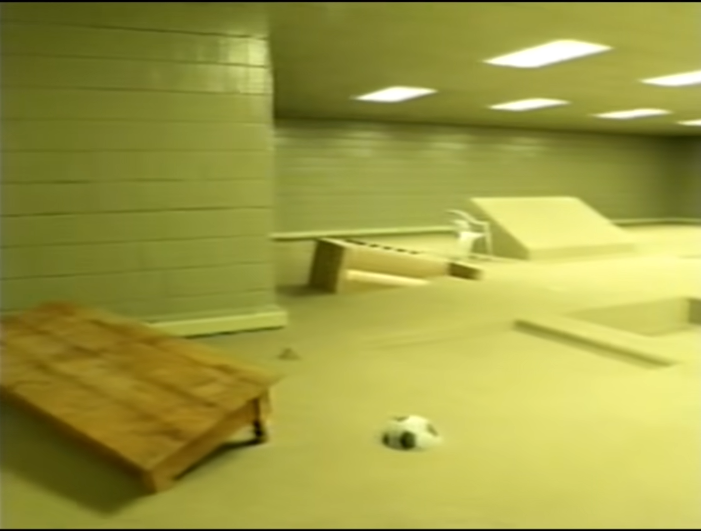

Javascript Games Programming Fundimantal
Scene 1 is inspired by the webseries known as "LOCAL 58", specifically the video titled "Skywatching". Which is linked here.
The video's main subject concerns the moon getting really close to the Earth and appearing massive. In this scene I made one single house stand in the middle of a velley while the moon is massive infront of it.
The terrain that the house is sitting on is done by using a heightmap of Hyrule, taken from "The Legend of Zelda: Breath of The Wild", and the texture of the ground is the "Minecraft" grass texture.
The texture of the house's main body and roof are also taken from Minecraft, with the textures being the Bricks and Blackstone Bricks textures respectively.

Scene 2 is also inspired by a horror webseries, this time one known as "The Backrooms".
I chose to use this as inspiration as The Backrooms concept itself is taken from game concepts themselves, especially it's adaption done by "Kane Pixels". Items clipping through the ground or floating in the air is intentional as it matches the specific scene I took inspiration from, pictured below.
